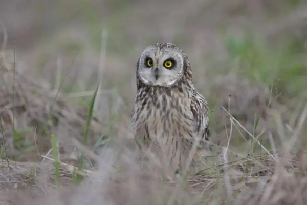

The Short-Eared Owl, a prevalent and widely distributed avian species, thrives in diverse environments across the globe. Recognizable by its small black beak, mottled brown body, and remarkable wings and tail adorned with distinct brown bars, this owl possesses an unmistakable appearance. A fascinating characteristic that sets the Short-Eared Owl apart from its nocturnal counterparts is its preference for diurnal hunting rather than traditional nighttime pursuits.
As the breeding season commences in March, Short-Eared Owls engage in serial mating for a single season and exhibit a unique social structure, living together in flocks.
Diverging from the nesting habits of many other owl species, they fashion their nests on the ground, specifically in low-vegetated areas such as prairies, meadows, and tundras. This ground-level nesting behaviour sets them apart in their reproductive strategies.
Short-Eared Owls boast a varied diet primarily consisting of small mammals, including voles, shrews, and rodents. However, their culinary preferences extend to other animal groups such as reptiles, amphibians, insects, and even birds like sparrows and larks.
Employing an opportunistic hunting style, these owls gracefully navigate low to the ground during daylight hours, skilfully capturing their prey in grasslands, meadows, and other open habitats.
While the Short-Eared Owl population has experienced declines due to habitat destruction and unfortunate collisions with vehicles, there is a glimmer of hope. The species is currently undergoing a global range expansion, leading to its classification as “Least Concern” on the IUCN Red List. However, continued conservation efforts are vital to ensure the sustained recovery and well-being of these remarkable birds.